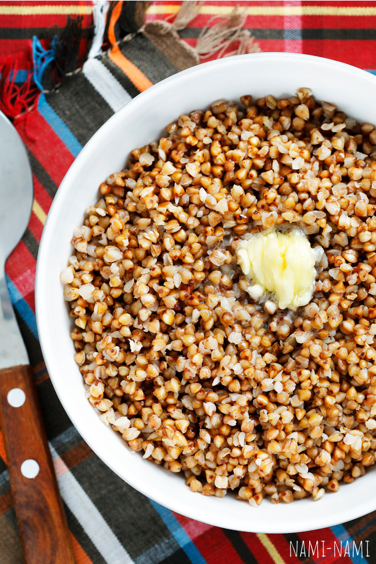

Tatar

Maitsvat tatraputru võib valmistada nii ahjus kui ka pliidi peal. Siinkohal pliidipudru variant.
Koostisosad
- 2 dl tatratangu
- 5 dl keeva vett
- 0.25 tl soola
- 1-2 sl võid
Valmistamine
- Kuumuta tatart 3-4 minutit võis*.
- Lisa kuum vesi
- Hauta kaane all tasasel tulel 15-20 minutit
- Poole hautamise ajal lisa soola
- Toit on valmis kui vedelik on imendunud ja tatar küps
- Naudi!